Authors: Koki Nozawa, Noriyuki Saitoh, Noriko Yoshizawa, Takashi Suemasu, Kaoru Toko
Type: both · Category: other · PDF: https://arxiv.org/pdf/2605.00304v1
Analysis basis: full PDF text, analyzed in chunks
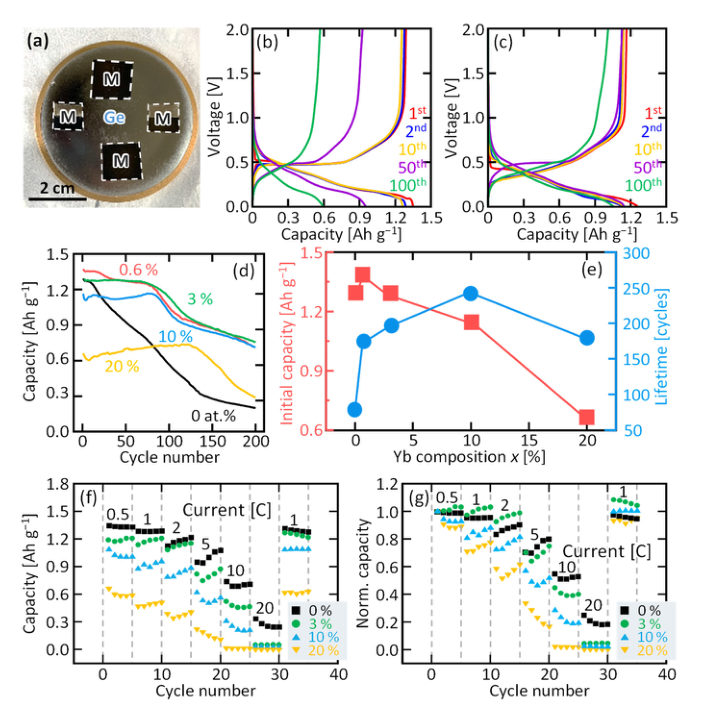
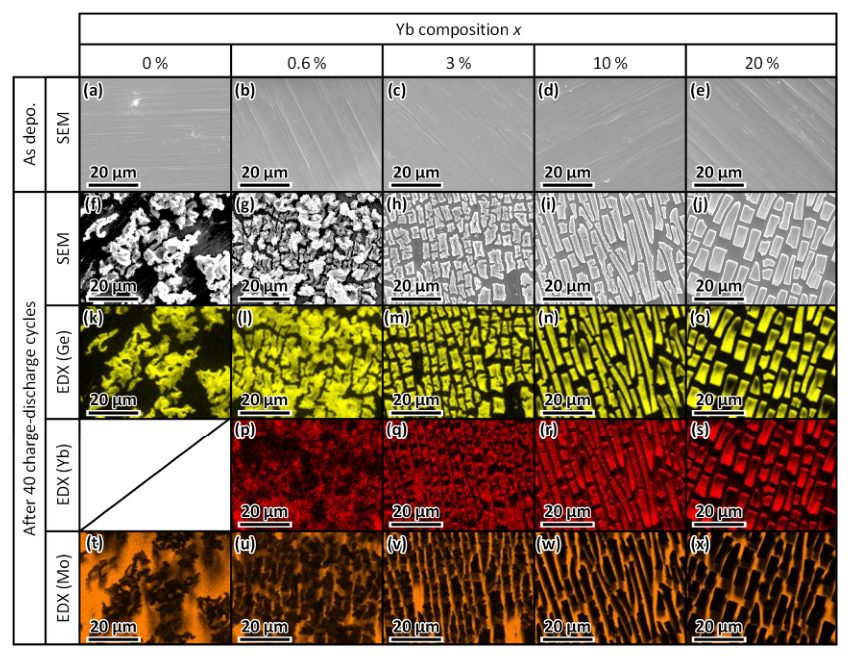
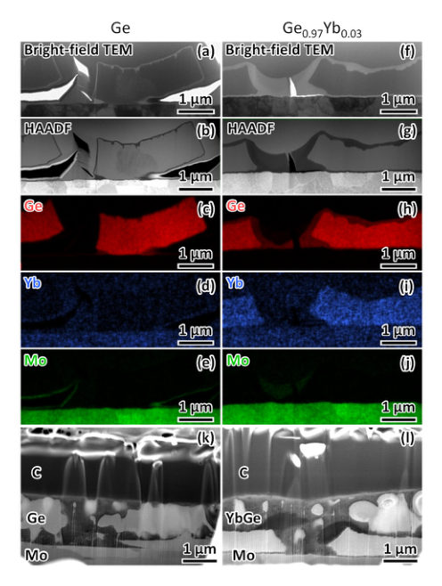
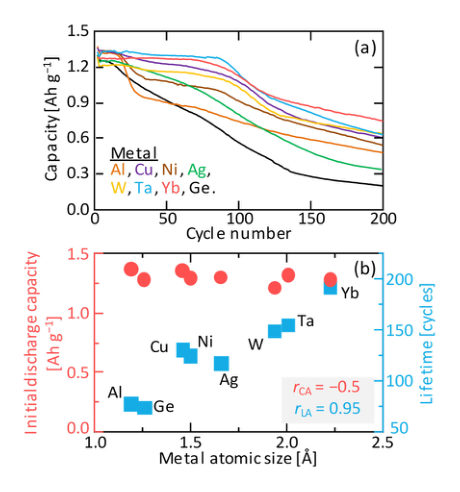
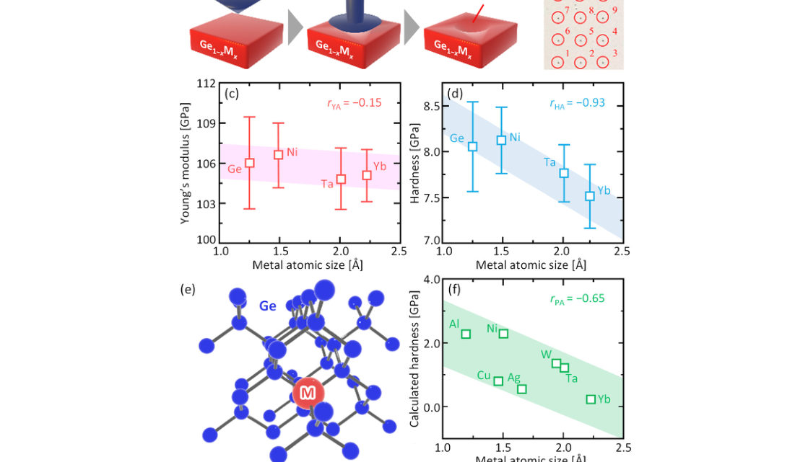
Summary. This paper demonstrates that doping Germanium anodes with large-atom metals like Ytterbium can significantly extend battery life. By making the anode mechanically softer, the material can better accommodate the physical stress of expansion, preventing the cracking and peeling that typically destroy high-capacity anodes.
Why it may be interesting. not directly relevant
Main problem. The rapid capacity degradation and mechanical failure (cracking and delamination) of high-capacity Germanium (Ge) anodes during lithiation/delithiation due to large volume expansion.
Main result. Trace doping of amorphous Ge with large-atom metals, specifically Ytterbium (Yb), enhances cycle life by approximately three times by inducing mechanical softening, which suppresses lithiation-induced damage.
Method. The study combines RF magnetron sputtering for film synthesis, electrochemical testing, nanoindentation for mechanical properties, and first-principles VASP calculations for hardness estimation.
Model / system. Amorphous Ge thin-film anodes doped with trace amounts (x ≈ 0.03) of various metals (Al, Cu, Ni, Ag, W, Ta, and Yb) deposited on Mo or SiO2 substrates.
Key observables. Initial discharge capacity, cycle life (lifetime), film hardness, Young's modulus, and metal atomic radius.
Important parameters / regimes. Metal dopant concentration (x ≈ 0.03), metal atomic radius, and C-rate.
Assumptions / limitations. The measured hardness is treated as a surrogate metric for fracture toughness; the supercell model assumes a 32-atom representation of the amorphous matrix.
Figures summary. Fig 1: Deposition setup and electrochemical performance (capacity, cycling, rate capability). Fig 2-3: Surface morphology (SEM) and cross-sectional TEM/STEM analysis of the anode structure. Fig 4: Correlation between metal size and electrochemical properties. Fig 5: Nanoindentation setup and correlation between dopant size and mechanical properties (Young's modulus, hardness) alongside computational supercell models.
Paper structure. Introduction of the Ge anode stability problem, followed by experimental synthesis and electrochemical characterization, then mechanical analysis via nanoindentation, computational validation of hardness trends, and a concluding discussion on the shift from volume-suppression to mechanical-compliance design.
Achieving long-term stability in high-capacity lithium-ion battery anodes remains a critical challenge. In this study, we present a materials-intrinsic strategy for extending the cycle life of Ge, a promising next-generation anode material, through trace doping with metal elements. We systematically investigated the effects of small additions of various metals and found that elements with large atomic size, particularly Yb, markedly improved the cycling stability without sacrificing the initial capacity, while appropriate Yb doping enhanced the anode lifetime by approximately a factor of three. Structural and electrochemical analyses revealed that this improvement originates from mechanical softening of the Ge anode, which suppresses lithiation-induced damage such as cracking and delamination. Nanoindentation measurements further showed a strong negative correlation between dopant atomic size and film hardness, establishing anode softening as a new design principle for damage-tolerant electrodes. Although Yb doping reduced the rate capability at high C-rates, the present results demonstrate a clear shift in design strategy from volume-change suppression to mechanical compliance. These findings provide a useful framework for stabilizing high-capacity alloy anodes through atomic-scale mechanical control.
Authors: Elmar Böckenhoff
Type: theory · Category: statistical mechanics · PDF: https://arxiv.org/pdf/2605.00441v1
Analysis basis: full PDF text, analyzed in chunks
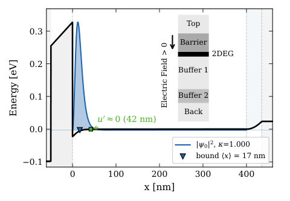
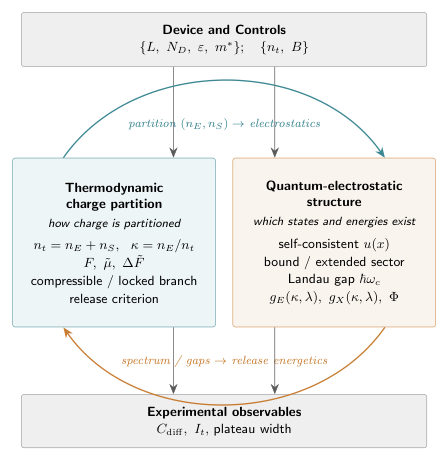
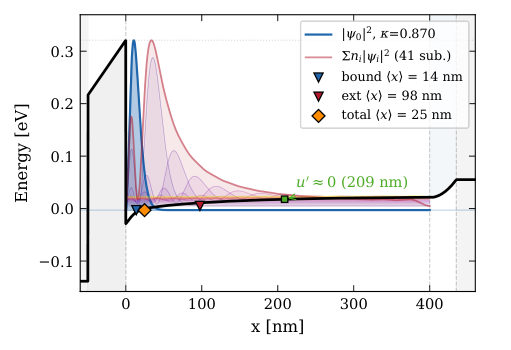
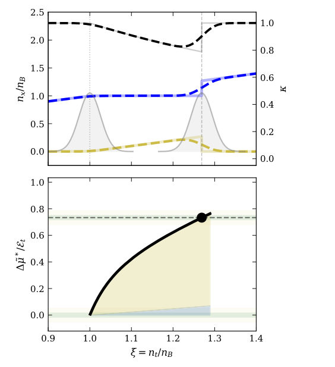
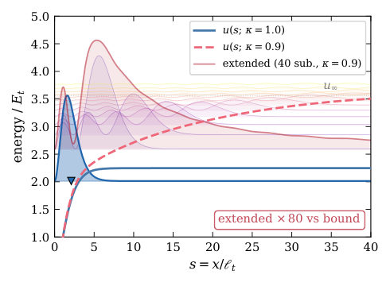
Summary. This paper provides a thermodynamic description of how charge is distributed between a bound interface layer and an extended screening layer in semiconductor heterostructures. It demonstrates that experimental phenomena like capacitance suppression and Hall plateaus are unified manifestations of the same underlying charge-partitioning mechanism. The theory uses a self-consistent Poisson-Schrödinger approach to make these effects calculable across different densities and geometries.
Why it may be interesting. not directly relevant
Main problem. Understanding the thermodynamic mechanism of charge partitioning in semiconductor heterostructures when a spectral gap prevents continuous charge absorption.
Main result. The development of a unified thermodynamic framework where capacitance, tunneling, and Hall plateaus emerge as different projections of a single coupled thermodynamic and quantum-electrostatic structure.
Method. A two-stage self-consistent Poisson-Schrödinger reduction using a Helmholtz free energy formulation and dimensionless canonical scaling.
Model / system. Quantized accumulation-layer heterostructures (e.g., GaAs) modeled as a multi-layer electrostatic stack consisting of a barrier, an active buffer, and a compensating buffer.
Key observables. Differential capacitance, tunnel current, chemical potential, and Hall plateau width.
Important parameters / regimes. Partition fraction (kappa), total induced density (nt), magnetic field (B), buffer width (lambda), and spectral gap (delta_gap).
Assumptions / limitations. The theory does not address microscopic kinetics, hysteresis, or metastability; it assumes the physical path is selected spectrally.
Figures summary. Figure 1 shows conduction-band profiles on the compressible branch; Figure 2 provides a schematic of the coupled theory; Figure 3 illustrates the locked-branch band profile; Figure 12 shows the roadmap of the canonical PS formulation.
Paper structure. The paper defines the charge partition, formulates the Helmholtz free energy, identifies compressible and locked branches, applies the theory to predict experimental observables, and validates via comparison with magnetocapacitance data.
We develop a thermodynamic description of accumulation-layer heterostructures in which the induced sheet density is partitioned between the near-interface accumulation-layer charge and a complementary screening charge in the surrounding structure. Treating this partition as the central state variable yields a complete Helmholtz free energy, a corrected locked-branch chemical potential, and a shifted release potential that separates energetic path selection from geometric capacitance. The physical path is selected spectrally: compressible segments remain fully screened, whereas incompressible segments evolve along a locked branch until release is triggered by the relevant gap. Differential capacitance, tunnel current and plateau width then emerge as different projections of the same coupled thermodynamic structure. A canonical two-stage self-consistent Poisson--Schrödinger reduction supplies universal master functions for the isolated accumulation layer and master surfaces for its finite-buffer extension, making the theory calculable across density and geometry. Comparison with magnetocapacitance and magnetotunneling data supports a picture in which nearby extended charge refills the accumulation layer and the effective screening depth grows with magnetic field.
Authors: Vivian Tong, Stefan Olovsjö, Rachid M'Saoubi, Mathias Grabner, Manuel Petersmann, Liam Wright
Type: both · Category: other · PDF: https://arxiv.org/pdf/2605.00703v1
Analysis basis: full PDF text, analyzed in chunks
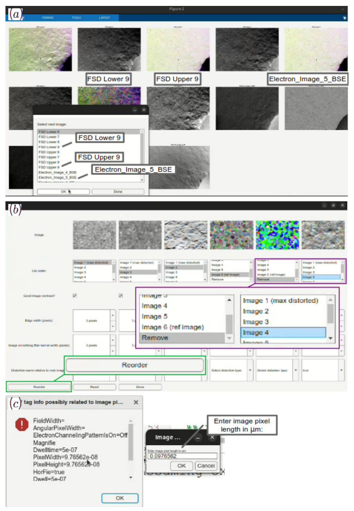
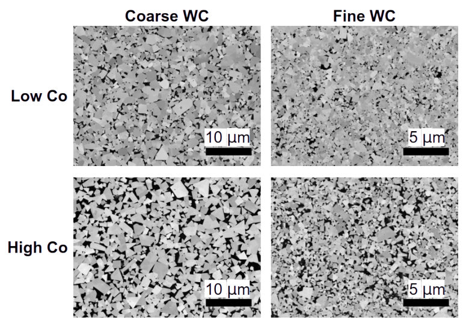
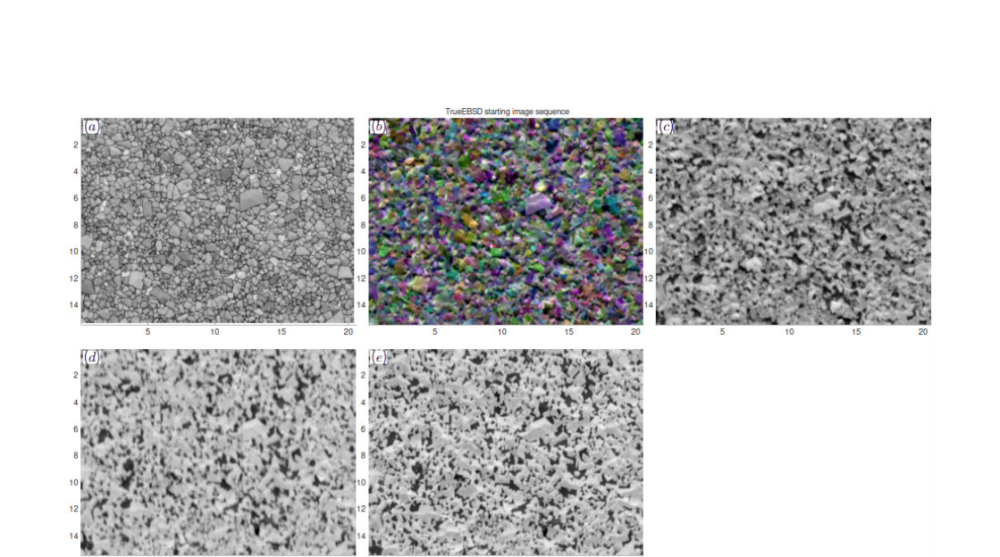
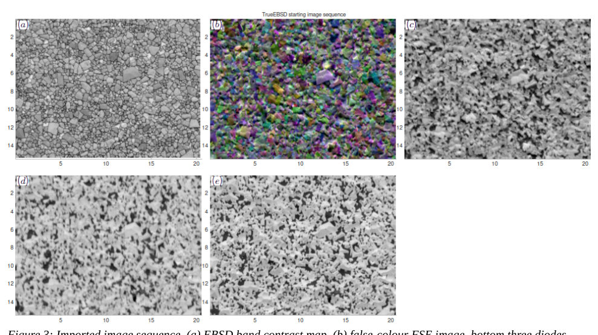
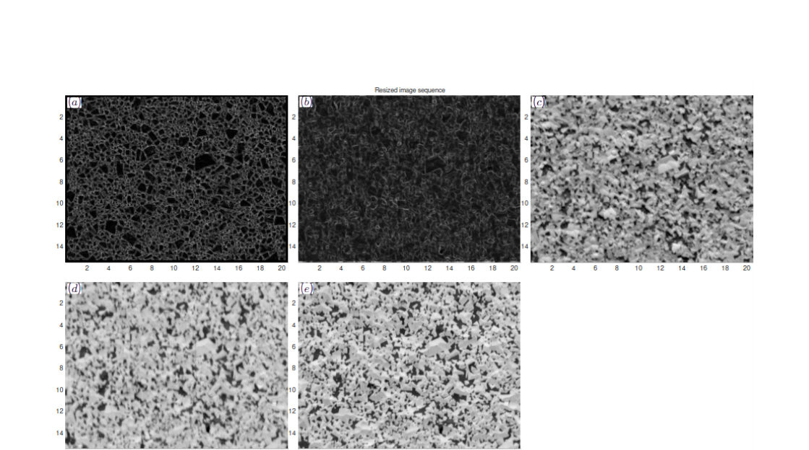
Summary. This paper presents TrueEBSD, an open-source MATLAB/MTEX add-on designed to automatically align and correct spatial distortions in EBSD maps. By enabling precise overlay with other SEM images, it allows for more accurate quantitative analysis of microstructures, such as phase fractions in composites and void formation in metals.
Why it may be interesting. not directly relevant
Main problem. Spatial distortions (drift, tilt, and electromagnetic shifts) in EBSD maps prevent accurate pixel-wise overlay with other SEM imaging modes, hindering quantitative correlative microscopy.
Main result. The implementation of TrueEBSD as an MTEX add-on enables automated image alignment and distortion correction, allowing for more accurate phase fraction and grain boundary void analysis.
Method. The tool uses FFT-based image cross-correlation of edge regions and fits local shifts to mathematical models (projective, affine, or linear spline) to align images.
Model / system. The software is applied to materials science systems, specifically WC-Co composites for studying phase fractions and copper polycrystals for investigating grain boundary voids.
Key observables. WC grain contiguity, Co phase fraction, grain boundary void statistics, and misorientation distributions.
Important parameters / regimes. Pixel size, ROI size, distortion type (affine, projective, or linear), and accelerating voltage.
Assumptions / limitations. The distortion model cannot correct highly localized, sharp-range distortions caused by surface topography, and alignment quality may decrease near image borders due to automation.
Figures summary. Figure 1 shows the GUI for data import; Figure 2 shows WC-Co microstructures; Figure 3-4 show EBSD/FSE input sequences and edge transforms; Figure 5-10 demonstrate alignment success, phase augmentation, and void analysis in copper.
Paper structure. The paper introduces the TrueEBSD software and its MTEX implementation, details the mathematical algorithms for distortion modeling, presents two case studies (WC-Co and copper), and discusses limitations regarding topography-induced errors.
TrueEBSD is an open-source MATLAB program for image alignment and spatial distortion correction of images and electron backscatter diffraction (EBSD) maps. We have re-implemented TrueEBSD as an add-on to MTEX, an established toolbox for EBSD data analysis. Spatial alignment enables correlative analysis methods, such as augmenting EBSD orientation maps with data from other imaging modes. The augmented EBSD maps can then be analysed further using MTEX. We demonstrate TrueEBSD on two example case studies: one for measuring Co phase fraction and WC contiguity in a WC-Co composite, and another for determining the relative susceptibility of grain boundaries to void formation in a copper polycrystal. In both examples, the EBSD map was augmented with scanning electron microscopy (SEM) image data. This enabled quantitative crystallographic measurements which would not be possible from analysing the EBSD maps and images separately.